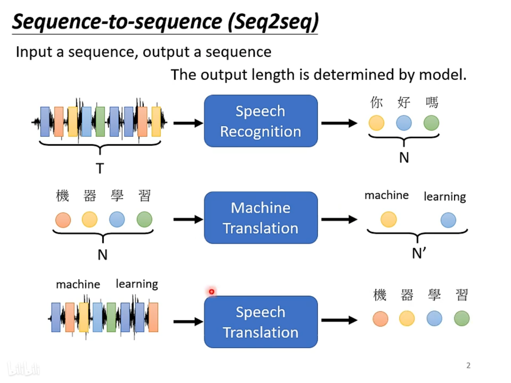
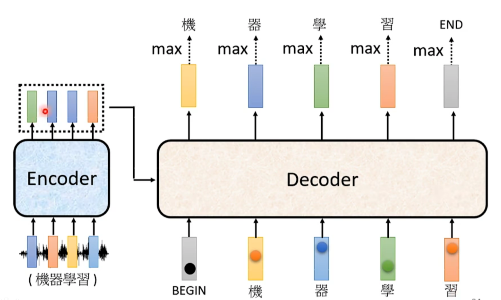
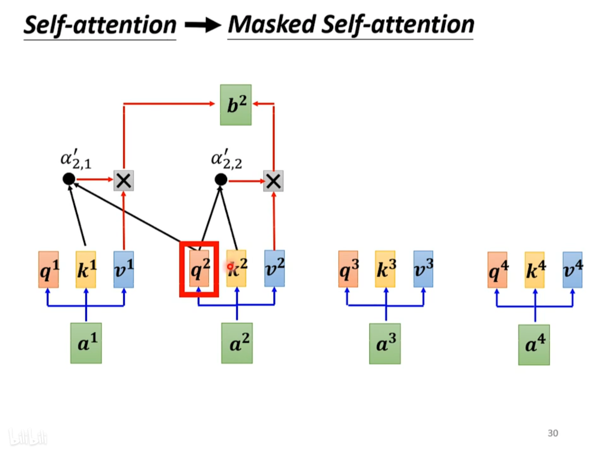
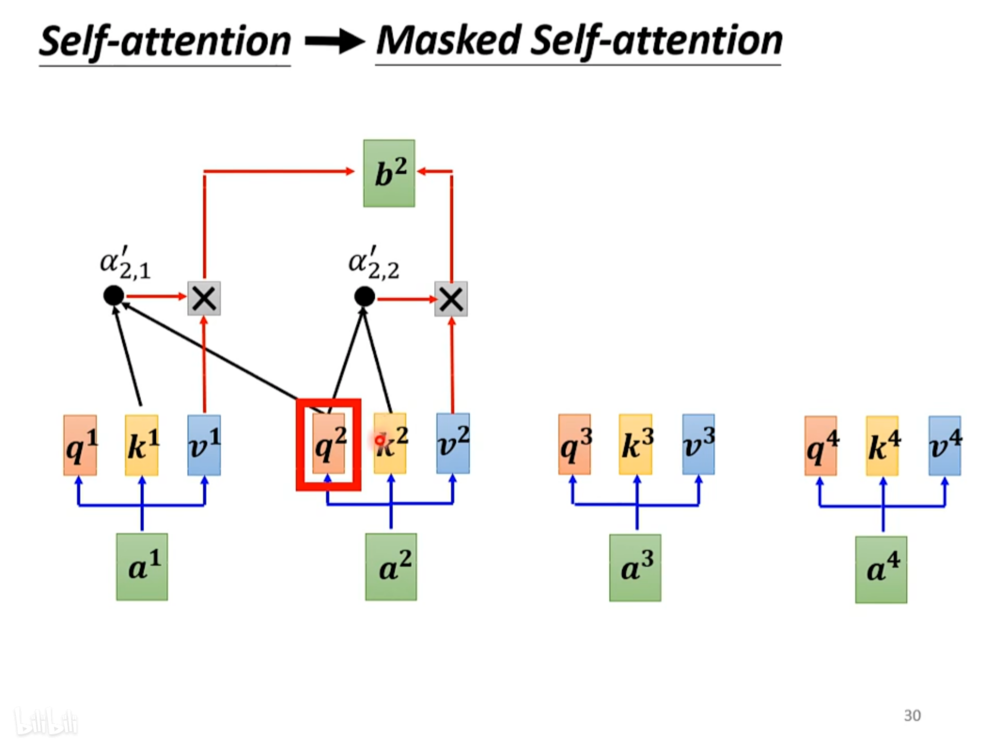
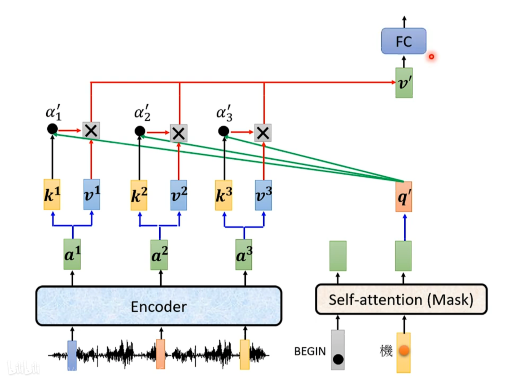
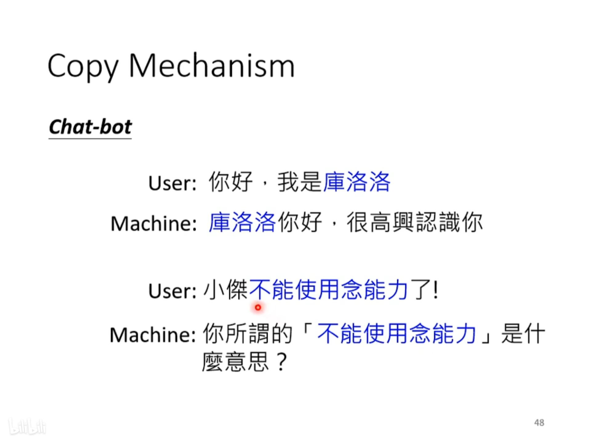
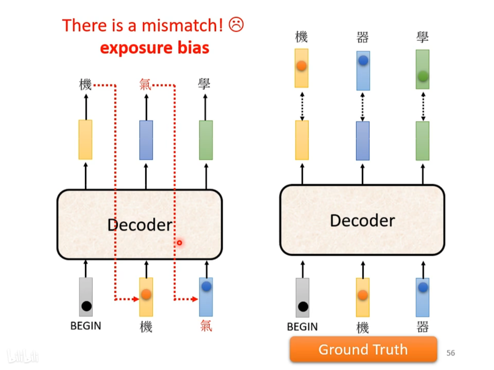

Transformer是什么#
Transformer可以理解为是Sequence-to-sequence（简称Seq2seq）的模型，它接受向量序列作为输入，输出向量序列。
Transformer的应用#
Transformer的应用除了上图提到的语音识别、机器翻译、语音翻译以外，还有
- 聊天机器人
- 句子词性分析
- 多标签分类
- 物体检测
Transformer的架构#
Transformer由编码器（Encoder）和解码器（Decoder）组成，前向传播的过程是Encoder将输入向量序列编码产生新的向量序列，然后Decoder将编码的向量结合begin向量（标记着位置，是一个one hot向量）产生第一个输出向量，然后把产生的第一个向量再输入Decoder，产生第二个向量，直到产生end向量为止，代表着输出完成。
如下图所示，是Transformer的内部结构，左半边是Encoder，右半边是Decoder。接下来具体解释Encoder和Decoder的组成。

Encoder#
Encoder由一系列block组成，每一个block里面都包含了self-attention层和FC层。

实际上，Transformer里融合了ResNet的思想，再self-attention产生了输出向量序列后，还会加上输入的向量，然后在一起进行layer normalization，就是对每一个向量，减掉其平均值后再除以标准差。进行了layer normalization后的向量才会被输入FC。
如下图所示，FC的部分也有residual的部分，经过了FC、layer normalization后，才得到一个block的输出。

此时我们回顾Encoder的架构，首先对于Encoder中的一个block，要做的事情有
- Positional Encoding（位置编码，lect4的笔记里有提到）
- 结合ResNet性质的Self-attention+layer normalization
- 结合ResNet性质的FC+layer normalization

Decoder#
Autoregressive Transformer#
Autoregressive transformer的前向传播过程大致是结合Encoder的输出和Begin向量得到第一个输出向量，以语言识别为例，然后取输出向量中对应概率最大的字对应的one hot向量作为第一位输出的结果，然后再用第一位输出的结果输入Decoder，产生下一个输出，直至产生End向量，才代表输出结束。


下图是Decoder的内部架构，Positional encoding和FC两个部分和Encoder是差不多的，所以下面重点分析Masked Attention部分和Masked Attention后的Attention block两个部分。

Masked Self-attention#
Masked Self-attention和一般的Self-attention不同之处在于：产生第一个输出向量时，只能考虑第一个输入向量，产生第二个输入向量时，只能考虑第一、第二个输入向量，以此类推。下面两张图很好地解释了这个机制
 

Cross attention#
这部分是Decoder内部架构图中第二个attention的模块，下图很好地说明了cross attention地机制。BEGIN向量和“机”向量进行Masked Self-attention，产生q向量，然后再同Encoder产生的输出得到attention score，再加权，通过FC layer得到第二个输出向量。
最重要的一点就是这个过程中的q向量不是来自于Encoder的输出，而是来自Mask Self-attention的输出。
Non autoregressive Transformer(NAT)#
和autoregressive transformer（AT）不同，NAT一次性产生所有的输出向量，然后截取END向量之前的向量作为最后的输出序列。
相比AT，它的优势在于的产生速度快，并且可以控制输出长度，但是它的效果往往不如AT。

Transformer的训练#
loss的来源#
loss的来源可以是每个输出的向量与正确向量的交叉熵，在训练时我们希望交叉熵最小化。

训练的一些tips#
Teacher Forcing#
为了防止训练时出现因第一个向量输出错误导致接下来的训练错误这样“一步错，步步错”的情况，所以我们在训练时把正确答案输入给decoder。

Copy Mechanism#
有时适当地从输入中进行一些copy，可以更好地完成任务。比如在聊天机器人训练中，可以对人名进行copy，因为一个人名在训练资料中出现的次数可能很少，网络无法通过学习习得输出正确人名的能力，所以对人名进行直接copy。
Guided Attention#
Guided Attention，可以理解为用先验知识来限制self attention层的注意力机制，比如在语音识别中，一个音节的识别只与对应时刻的向量及其周边向量有关。所以应该把attention限制在这个时刻附近较小的范围内。

Beam Search#
可以把找输出向量序列看作是树形搜索，所以就把问题看作是设计合适的搜索算法，使得全局的loss最小。

Exposure bias#
训练时我们把正确答案直接喂给decoder，但是如果在测试的时候产生了错误的向量，可能就会产生mismatch，从而影响后面的输出。所以我们可以在训练时就适当地喂入错误的向量，使得模型的适应能力更强。
作者: 核子